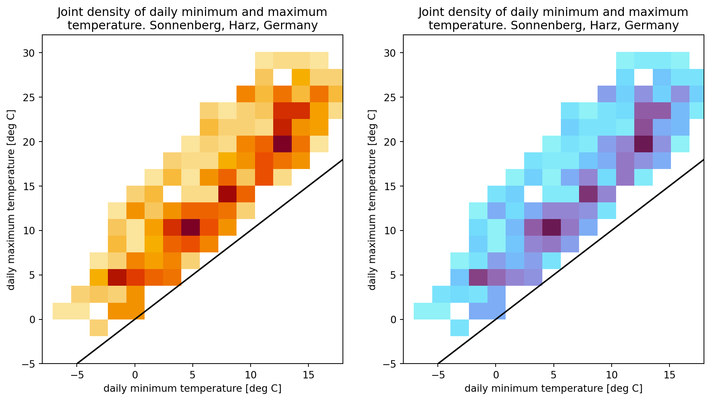
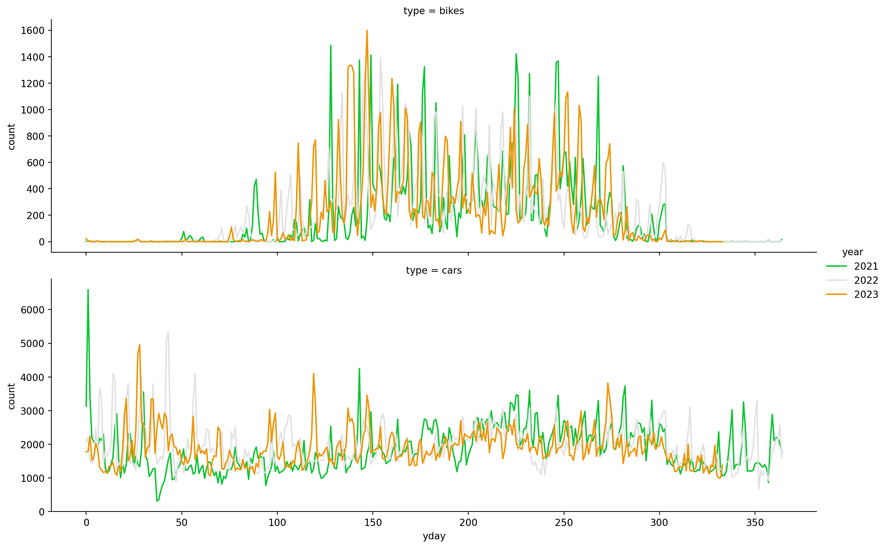

from colorspace import qualitative_hcl, dataset
import matplotlib.pyplot as plt
import pandas as pd
import seaborn as sns
# Loading HarzTraffic data set
df = dataset("HarzTraffic")
# Palette (modified "Dark 3" sequential palette)
pal = qualitative_hcl("Dark 3", h1 = -150, h2 = 120)
# Creating plot
fig, ax = plt.subplots(1, 1, figsize = (8, 4))
sns.scatterplot(data = df, x = "temp", y = "bikes",
hue="season", ax = ax,
palette = pal.colors(4))
plt.title("Number of bikes given daily mean temperature")
plt.xlabel("temperature [deg C]")
plt.show() HCL-Based Color Scales for seaborn
This article shows a series of different plots and figures using the seaborn graphics library using color maps based on the colorspace package.
Scatterplot
The following example shows the number of motorbikes recorded by an automatic traffic counting station in the Harz Mountains (Germany), an region very popular with bikers. The number of bikes (y-axis) is plotted against the daily mean temperature (x-axis) and colored by season using custom colors from a modified version of the HCL-based qualitative color palette “Dark 3”.
Multi-group histogram
The next example shows a multi-group distribution plot (kind = "kde") based on the ‘HarzTraffic’ data set where the distribution of the daily maximum temperature is shown given the prevailing season. The colors are based on a modified sequential HCL-based palette using “Dark 3” as template (adjusting hues).
from colorspace import qualitative_hcl, dataset
from matplotlib import pyplot as plt
import seaborn as sns
# Loading penguins data set
df = dataset("HarzTraffic")
# Palette to be used
pal = qualitative_hcl("Dark 3", h1 = -180, h2 = 100)
# Creating plot
g = sns.displot(data = df, x = "tempmax", hue = "season", fill = "season",
kind = "kde", rug = True, height = 4, aspect = 1.5,
palette = pal.colors(4))
g.set_axis_labels("temperature [deg C]")
g.set(title = "Distribution of daily maximum temperature given season")
plt.tight_layout()
plt.show()
Heatmap
HCL-based color maps (LinearSegmentedColormap objects) can be used directly for seaborn heatmaps. The plot below shows the joint density of the daily maximum temperature (y-axis) and daily minimum temperature (x-axis) based on the ‘HarzTraffic’ data set.
The left subplot employs one of the pre-defined sequential HCL-based color palette “YlOrRd” (yellow-orange-red) in reverse order, while the right subplot shows the same information but using a custom sequential HCL-based palette. Instead of reversing the palette via rev = True, the .reversed() method on the LinearSegmentedColormap (cmap) is used to get the same effect.
from colorspace import sequential_hcl, dataset
import seaborn as sns
import matplotlib.pyplot as plt
import numpy as np
# Loading penguins data set
df = dataset("HarzTraffic")
# New figure with 2 subplots
fig, (ax1, ax2) = plt.subplots(1, 2, figsize = (12, 6))
# Draw heatmap (left)
g1 = sns.histplot(x = "tempmin", y = "tempmax", data = df,
bins = 25, pthresh = .1, ax = ax1,
cmap = sequential_hcl("YlOrRd", rev = True).cmap())
g1.plot([-50, 50], [-50, 50], color = "black") # Adding diagonal
g1.set(xlim = [-8, 18], ylim = [-5, 32]) # Re-adjusting limits
g1.set_xlabel("daily minimum temperature [deg C]")
g1.set_ylabel("daily maximum temperature [deg C]")
g1.set_title("Joint density of daily minimum and maximum\n" +
"temperature. Sonnenberg, Harz, Germany")
# Create fully customized HCL-based sequential palette
custom_cmap = sequential_hcl(h = [330, 170], c = [45, 70, 10],
l = [25, 95], power = [0.5, 1.5]).cmap().reversed()
# Draw heatmap (right) with customized color map
g2 = sns.histplot(x = "tempmin", y = "tempmax", data = df,
bins = 25, pthresh = .1, ax = ax2,
cmap = custom_cmap)
g2.plot([-50, 50], [-50, 50], color = "black") # Adding diagonal
g2.set(xlim = [-8, 18], ylim = [-5, 32]) # Re-adjusting limits
g2.set_xlabel("daily minimum temperature [deg C]")
g2.set_ylabel("daily maximum temperature [deg C]")
g2.set_title("Joint density of daily minimum and maximum\n" +
"temperature. Sonnenberg, Harz, Germany")
plt.show()
Lineplot with multiple facets
This example shows the number of bikes and cars for the different years by day of year (yday; Julian day) using a diverging HCL-based color palette.
from colorspace import diverging_hcl
import matplotlib.pyplot as plt
import seaborn as sns
import pandas as pd
# Loading penguins data set
df = dataset("HarzTraffic")
df["year"] = pd.DatetimeIndex(df.date).year
# Reorganizing the data
a = df.loc[:, ["year", "yday", "bikes"]].rename(columns = {"bikes": "count"})
a.insert(2, "type", "bikes")
b = df.loc[:, ["year", "yday", "cars"]].rename(columns = {"cars": "count"})
b.insert(2, "type", "cars")
# Concatenate (rowwise)
df = pd.concat([a, b], axis = 0)
del a, b
# Number of colors required
N = len(np.unique(df.year))
# Plot the lines on two facets
sns.relplot(data = df, x = "yday", y = "count",
hue = "year", row = "type",
kind = "line", size_order = ["cars", "bikes"],
height = 4, aspect = 3, facet_kws = dict(sharey = False),
palette = diverging_hcl("Green-Orange").colors(N))
plt.show()
Barplot
The Harz region in Germany is well known amongst bikers which often use their time on the weekend to go for a ride. To visualize this, the following barplot shows the average number of bikes (with error bars) during the summer seasons (June-August) 2021-2023 based on the “HarzTraffic” data set. The qualitative HCL-based color palette “Harmonic” is used to colorize the different days of week.
from colorspace import qualitative_hcl, dataset
import matplotlib.pyplot as plt
import seaborn as sns
# Loading data set
df = dataset("HarzTraffic")
df = df.loc[(df.season == "summer"), :]
sns.barplot(x = "dayofweek", y = "bikes", hue = "dow", data = df,
order = ["Mon", "Tue", "Wed", "Thu", "Fri", "Sat", "Sun"],
legend = False,
palette = qualitative_hcl("Harmonic").colors(7))
plt.title("Average number of bikes per day of week\nsummer season 2021-2023")
plt.show()As a slightly more complex example, the visualization below shows grouped barplots with the total number of bikes, cars, trucks, and other vehicles registered on a monthly basis between January 2021 and November 2023, using the example data set The different vehicle types are colorized using the sequential HCL-based color palette “Plasma”. The upper plot shows original colors (no visual constraints), the lower simulates the same colors seen by people with deuteranope vision (green-yellow-red weakness).
from colorspace import sequential_hcl, dataset, deutan
import pandas as pd
import seaborn as sns
import matplotlib.pyplot as plt
# Loading penguins data set
df = dataset("MonthlyHarzTraffic")
# Reshaping the pandas DataFrame
res = []
for t in ["bikes", "cars", "trucks", "others"]:
tmp = df.loc[:, ["year", "month", t]].rename(columns = {t: "count"})
tmp.insert(3, "type", t)
res.append(tmp)
df = pd.concat(res, axis = 0)
del res, tmp
# New figure
fig, (ax1, ax2) = plt.subplots(2, 1)#, figsize = (8, 6))
# Plotting (unconstraint and deuteranope vision)
sns.barplot(x = "month", y = "count", hue = "type", data = df, ax = ax1,
palette = sequential_hcl("Plasma")(4))
sns.barplot(x = "month", y = "count", hue = "type", data = df, ax = ax2,
palette = deutan(sequential_hcl("Plasma")(4)))
# Setting title, adjusting legend
ax1.set_title("Total number of vehicles, 2021-2023")
ax1.set_xlabel(None)
sns.move_legend(ax1, "upper left", ncol = 4, title = None, frameon = False)
sns.move_legend(ax2, "upper left", ncol = 4, title = None, frameon = False)
plt.show()